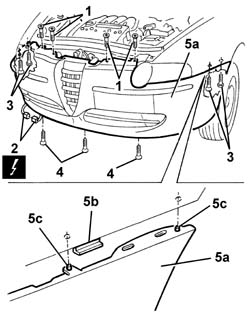
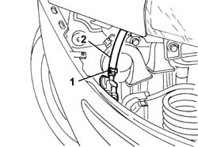
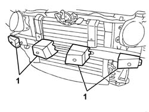
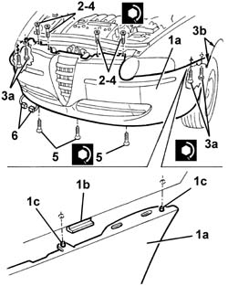

7210E10 R.R. FRONT BUMPER
- Path
- Procedures > 72 PANELS AND FRAME > 7210 REMOVING REFITTING > 7210E external parts > 7210E10 R.R. FRONT BUMPER
- Kind
- repair procedure (removal / refitting; the operation number is the code)
- Applies to
- all engines; all production periods
- Interactive page
- https://sloeber94.github.io/elrnDB-a147/en/#/3025970
Applies to: all engines; all production periods
 Removing
Removing
 Refitting
Refitting7055B54 under-engine guard - r r
7055B64 Engine compartment DUST shield in front wheel arch (one), left or right - R.R. (left and right sides)
7055B42 Additional FRONT WHEEL ARCH (one), left or right - R.R. (left and right sides)
Lower the vehicle and open the bonnet lid.
1. Undo the upper central bumper bolts.
Raise the vehicle.
2. Prise up from the retainer and disconnect the braid electrical connection from the front turn signals.
 | Name | Connector |
|---|---|---|
2 | Direction indicators / front couplnig |
3. Working from both sides of the car, undo the bumper's side bolts.
4. Undo the lower bolts fixing the bumper.
5. Remove bumpers (5a) by releasing from side retainers (5b) and releasing locating pins (5c).

Applies to: all engines; all production periods
1. Working inside the right front wheel arch, undo the headlamp washer pipe band (if present).
2. Disconnect the pipe (if present).

Applies to: all engines; all production periods
Lower the vehicle.
1. Prise out the buffers if necessary.

Applies to: all engines; all production periods
If necessary, 7205E10 Stripping FRONT BUMPER
Applies to: all engines; all production periods
Refitting
RemovingCheck that the front bumpers are undamaged.
If carried out, 7205E10 Stripping FRONT BUMPER
Refit the buffers if they were removed.
Connect the headlamp washer pipe and secure using the band.
1. Position bumpers (1a) by doing up side retainers (1b) and locating pins (1c).
2. Screw in the upper bumer bolts without tightening.
3. Tighten side bolts (3a) and ensure the bumpers are aligned with the wing at the sides (3b).
 | Fastening | Component | Ø | Value (daNm) |
|---|---|---|---|---|
3a | Bolt | FRONT BUMPER | M6 | 0.75 |
4. Tighten the top central bumper retaining bolts.
| Fastening | Component | Ø | Value (daNm) |
|---|---|---|---|---|
4 | Bolt | FRONT BUMPER | M6 | 0.75 |
5. Tighten the lower bolts fixing the bumper.
| Fastening | Component | Ø | Value (daNm) |
|---|---|---|---|---|
5 | Bolt | FRONT BUMPER | M6 | 0.75 |
Connect the electrical connections and fit to the retainer.

Applies to: all engines; all production periods
7055B42 Additional FRONT WHEEL ARCH (one), left or right - R.R. (left and right sides)
7055B64 Engine compartment DUST shield in front wheel arch (one), left or right - R.R. (left and right sides)